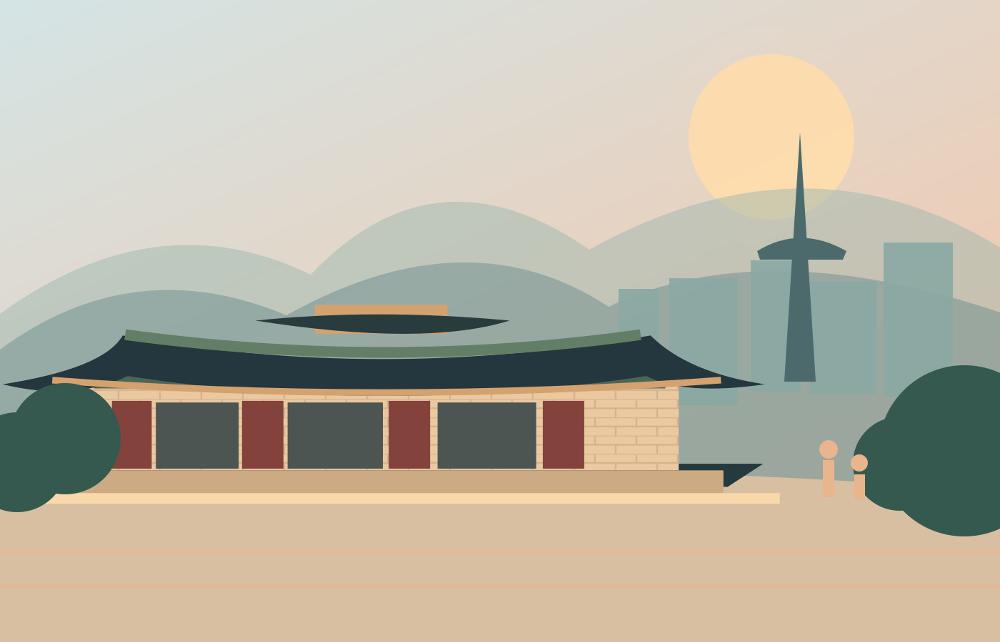

Centuries of stories
Wander through royal palaces, traditional villages, and places that have shaped Korean identity.
Dive into history →A COUNTRY OF CONTRASTS / 01—05
Ancient palaces beside neon streets. Quiet mountain mornings and unforgettable city nights. There are a thousand reasons to visit South Korea. Here's where to begin.
YOUR NEXT FAVORITE PLACE IS WAITING.

THE REASONS / 01
Whether you love history, street food, music, or scenery, Korea brings it all together in one remarkable trip.
Wander through royal palaces, traditional villages, and places that have shaped Korean identity.
Dive into history →Try new flavors, learn simple Korean phrases, and experience traditions that remain alive today.
Meet the culture →Discover the influence of K-pop, binge-worthy dramas, and the excitement of Korea's cities.
Feel the wave →BEYOND THE CAPITAL / 02
Take in the colorful hills of Busan, the volcanic landscape of Jeju, or the heritage treasures of Gyeongju. Every region has a different story to tell.
Find your next stop →START EXPLORING / 03
Four paths, one unforgettable country. Follow the part of Korea that interests you most.
The history behind the palaces, traditions, and modern nation.
Discover the history → 02 / DAILY LIFEFood, clothing, language, and the art of Korean hospitality.
Explore the culture → 03 / HALLYUWhy Korean music and dramas have captivated global audiences.
Enter the world → 04 / THE JOURNEYCity views, scenic coastlines, and must-see historic landmarks.
Plan your visit →YOUR ADVENTURE / 04
Have a specific place or experience in mind? Search for more information about it.